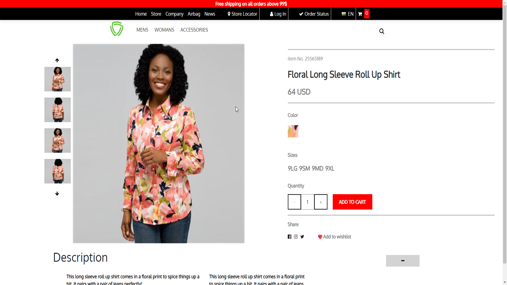

Portfolio



Full Stack Web Developer, Electron Developer, UI/UX, QA

Hello, my name is Serkan, and I am currently a student at the University of Ruse. I have been passionately involved in full-stack web development since high school, cultivating a robust understanding of data structures, algorithms and databases. Throughout my journey, I have successfully developed multiple websites and web applications, leveraging Electron to create sophisticated user experiences. Additionally, I have contributed my skills and creativity to the design and development of two games, showcasing my versatility and commitment to innovation in technology.
Throughout my tech journey, I've had the opportunity to work with a diverse palette
of technologies, each contributing
to my growing expertise in the digital creation realm. My toolkit includes:
-JavaScript, HTML, CSS/SCSS
-Electron
-C++
-NodeJS
-MySQL & MongoDB
-Selenium
-C#
-Unity
-Java
Additional technologies that I have worked with:
-Photoshop, Davinci Resolve, Sony Vegas